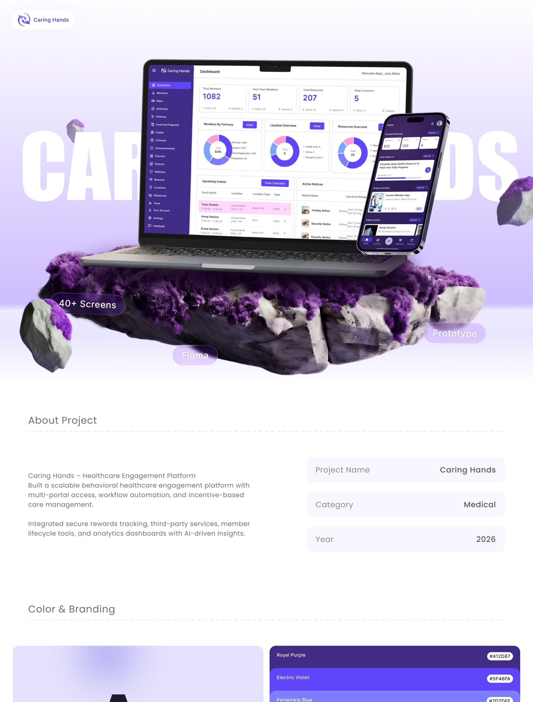
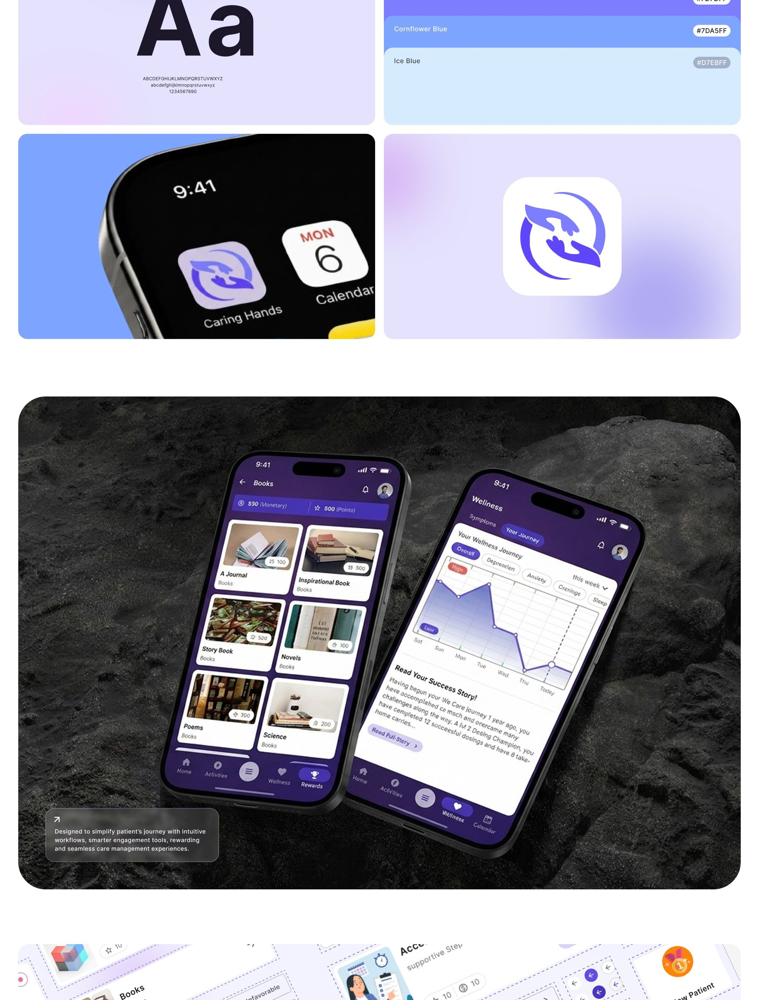
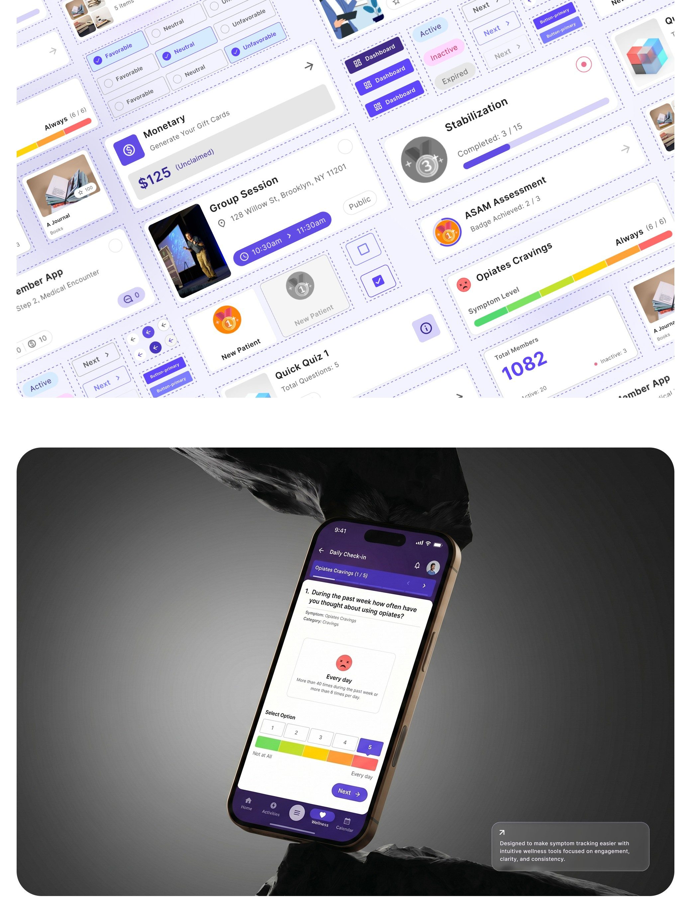
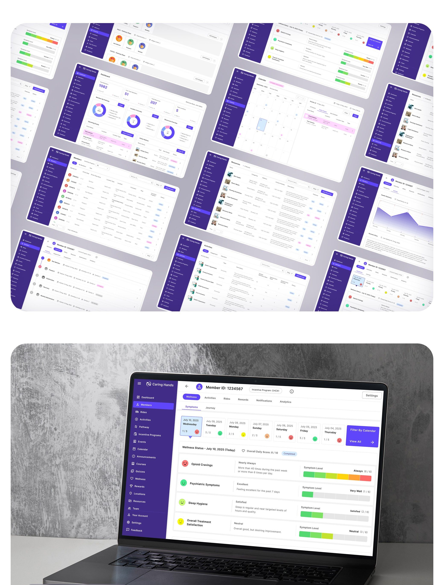
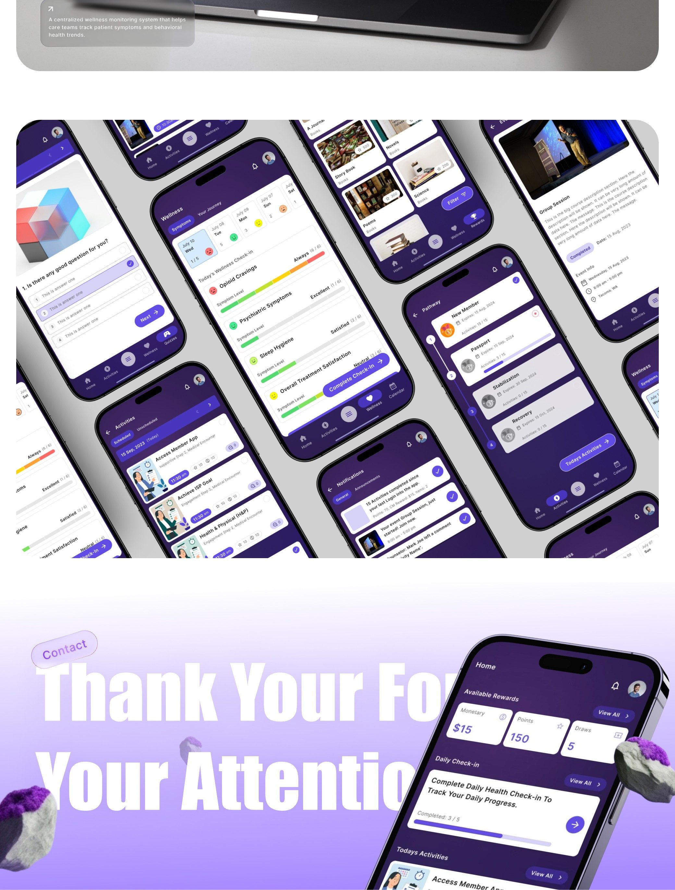

Lead UI/UX Designer
4 Months (2026)
Behavioral Web App, Mobile Patient Apps, Branding
1 Designer, 2 Developers, 1 Clinical Lead

About Caring Hands
Caring Hands is a healthcare-focused digital platform designed to bring essential care-related information, tracking, and management tools into a more connected digital experience. The product combines mobile and web experiences to help users access important healthcare information, monitor progress, manage activities, and stay connected with their care journey. The design challenge was not simply to make a healthcare interface look modern. It was to make a potentially complex healthcare ecosystem feel clear, approachable, and easy to navigate for users who may already be dealing with sensitive or stressful situations. ---
Problem Statement
- Patients find traditional medical platforms clinical and stressful.
- Complex schedules and documentation lead to high program drop-out rates.
- Vital treatment progress is displayed as raw numbers without context.
Proposed Solution
- Designed a warm, supportive interface featuring rounded cards and soft tones.
- Implemented daily check-ins and progressive detail views to reduce anxiety.
- Created clear progress visualizations that turn data into positive feedback.
Design Process
those are the details about all projects :
A more connected and intuitive healthcare experience
Caring Hands is a healthcare-focused digital platform designed to bring essential care-related information, tracking, and management tools into a more connected digital experience.
The product combines mobile and web experiences to help users access important healthcare information, monitor progress, manage activities, and stay connected with their care journey.
The design challenge was not simply to make a healthcare interface look modern. It was to make a potentially complex healthcare ecosystem feel clear, approachable, and easy to navigate for users who may already be dealing with sensitive or stressful situations.
Healthcare platforms often contain a large amount of information, multiple workflows, and different types of users.
When these experiences are fragmented, users can struggle to understand:
- Where they are in their care journey
- What they need to do next
- How their progress is changing
- Where to find important information
- How to manage different healthcare-related activities
Caring Hands was designed around the idea of bringing these interactions into a more structured and accessible digital experience.
The goal was to create an interface where healthcare information feels organized rather than overwhelming.
The Business Problem
The core challenge was to turn a complex healthcare service into a product that could be understood quickly and used confidently.
The platform needed to balance two different requirements:
For the business:
Create a scalable digital system that can organize healthcare workflows, information, activities, and user interactions.
For the user:
Make those workflows feel simple, predictable, and easy to understand.
Healthcare products cannot rely on visual design alone. Information hierarchy, clarity, consistency, and trust are critical because users may interact with the product while making important decisions about their care.
Primary Users
Patients and individuals receiving healthcare or wellness-related services.
These users need a simple way to:
- Understand their current information
- Track relevant activities or progress
- Review healthcare-related data
- Navigate between different areas of the product
- Complete required actions
- Stay engaged with their care journey
Secondary Users
Healthcare professionals and care teams who need structured information to monitor users, manage workflows, and make informed decisions.
The experience was designed around several common problems in healthcare applications:
Information Overload
Healthcare products can contain large amounts of information. Without strong hierarchy, important information can easily get lost.
Complex Navigation
Users may need to move between multiple sections, records, activities, reports, and workflows.
Lack of Context
A number or chart by itself does not always tell users what it means or what they should do next.
Low Engagement
Healthcare is an ongoing journey. Users need reasons to return to the product and understand their progress over time.
Trust & Confidence
The interface needs to feel reliable and professional without becoming cold or intimidating.
The design focused on five main objectives:
1. Simplify complex healthcare information
2. Create a consistent experience across mobile and web
3. Make important information immediately visible
4. Improve navigation and information hierarchy
5. Create a modern healthcare experience that feels trustworthy and approachable
01 — Information First
The interface prioritizes the information users are most likely to need first.
Instead of presenting everything at the same visual weight, content is separated into clear sections, cards, tables, charts, and supporting information.
This creates a stronger visual hierarchy and makes complex screens easier to scan.
02 — Progressive Disclosure
Not every piece of healthcare information needs to be visible at the same time.
The design uses cards, navigation levels, tabs, detail screens, and contextual sections to reveal information progressively.
This reduces cognitive load while still allowing users to access deeper information when needed.
03 — Data Visualization
Healthcare data becomes much easier to understand when users can see patterns rather than only reading numbers.
The dashboard uses visual summaries, charts, progress indicators, and structured statistics to make data more understandable at a glance.
The goal was not to add charts simply for decoration.
Each visualization should help answer a question:
**What is happening?
Is it improving?
Is something unusual?
What should I look at next?**
04 — Consistent Cross-Platform Experience
Caring Hands contains both mobile and desktop/web experiences.
The design maintains a consistent visual language across these environments while adapting interaction patterns to each device.
The desktop experience provides more space for dashboards, tables, analytics, and detailed information.
The mobile experience focuses on quick access, focused tasks, and simplified navigation.
Key Design Decisions
Dashboard Experience
The dashboard acts as the information hub.
Key information is surfaced through:
- Summary cards
- Progress indicators
- Charts
- Lists
- Status indicators
- Quick-access sections
This allows users to understand their current state without opening multiple screens.

Mobile Experience
The mobile experience focuses on making important healthcare information accessible on the go.
The screens shown in the showcase demonstrate:
- Dashboard information
- Activity/content cards
- Data visualization
- Detail views
- Structured forms
- Navigation
- Progress/status information
The mobile UI uses large touch-friendly areas and clear visual grouping so users can complete common tasks without navigating through unnecessarily complex flows.

Data & Analytics
One of the strongest parts of the product is its ability to turn healthcare-related information into structured visual insights.
Instead of displaying raw information as one long list, the interface separates information into:
- Key metrics
- Trends
- Categories
- Status
- Detailed records
This makes the product useful not only for completing tasks, but also for understanding what is happening over time.

Structured Management Interface
The desktop interface demonstrates a more operational side of the product.
Tables, filters, status labels, navigation, and structured data allow larger amounts of information to be managed without sacrificing usability.
The design uses visual grouping to distinguish:
- Active information
- Status
- User records
- Actions
- Supporting details
This creates a balance between information density and readability.

Visual Design
The visual system combines a healthcare-oriented sense of trust with a modern digital-product aesthetic.
The purple-based interface creates a recognizable brand identity while the lighter surfaces keep information readable.
The visual language is built around:
- Soft backgrounds
- Rounded cards
- Clear spacing
- Strong typography hierarchy
- Purple primary actions
- Status colors
- Data visualization
- Consistent component styling
The result is a system that feels modern without becoming overly decorative.
Design System
A reusable design system was established to maintain consistency across the product.
The system includes:
Typography
A clear type hierarchy differentiates:
- Page titles
- Section headings
- Card titles
- Body content
- Supporting labels
- Data values
Color System
The primary purple palette creates brand recognition while secondary colors communicate different statuses and data states.
Components
Reusable components support:
- Navigation
- Cards
- Buttons
- Inputs
- Tables
- Tabs
- Charts
- Status indicators
- Mobile navigation
- Data blocks
This approach makes the product easier to scale as new features are introduced.
What I Focused on as a Product Designer
The main design focus was not simply creating attractive healthcare screens.
It was about translating complexity into clarity.
I focused on:
01. Information hierarchy
Making the most important information visually prominent.
02. Usability
Reducing unnecessary steps and making common actions easier to understand.
03. Data comprehension
Using visual patterns to make complex information easier to interpret.
04. Cross-platform consistency
Creating a connected experience between mobile and web.
05. Scalability
Building reusable patterns that can support additional healthcare workflows in the future.
The Outcome
The resulting experience brings together healthcare information, tracking, management, and engagement within a cohesive digital ecosystem.
The product demonstrates how a healthcare platform can move beyond traditional information-heavy interfaces and create a more approachable, structured, and visually understandable experience.
Rather than overwhelming users with information, the design progressively organizes that information around what users need to know and do.
Key Takeaways
Complexity doesn't have to look complicated.
Healthcare products naturally contain complex information. Good UX does not remove that complexity; it organizes it.
Data needs context.
Charts and metrics become useful when users can quickly understand what the information means.
Consistency builds confidence.
A consistent visual and interaction system helps users feel more comfortable navigating a healthcare product.
Mobile and web should feel connected.
Users should feel like they are using the same product regardless of device, even when the interaction patterns are different.
Good healthcare UX is about trust.
Every interaction should make the user feel informed, confident, and in control.
Case Study Page Structure for AI
Create the case-study page as a premium product-design portfolio case study.
Section 01 — Hero
Layout:
- Large project title: "Caring Hands"
- Short subtitle: "A connected digital healthcare experience"
- Short project description
- Project metadata
- Large full-width visual/mockup
Keep the hero visually spacious and let the product image dominate the section.
Section 02 — Overview
Use a two-column layout.
Left:
Short explanation of what Caring Hands is and why the product exists.
Right:
Project metadata:
- Project: Caring Hands
- Category: Healthcare
- Platform: Web + Mobile
Do not make this section overly long.
Section 03 — The Challenge
Use a large heading followed by a concise explanation of the business and UX challenge.
Then show 3–4 challenge cards:
- Complex healthcare information
- Difficult navigation
- Data comprehension
- User engagement
Section 04 — Design Approach
Use a horizontal or vertical process layout:
Understand → Structure → Simplify → Visualize → Scale
Add a short explanation beneath each step.
Section 05 — Mobile Experience
Place a short text block beside or below it explaining:
- Mobile-first accessibility
- Simplified navigation
- Clear information hierarchy
- Data visualization
- Focused interactions
Section 06 — Dashboard & Data
Make the image large and allow it to visually demonstrate the product.
Add small annotations pointing toward:
- Key metrics
- Charts
- Navigation
- Data cards
- Status information
Section 07 — Management Experience
Explain how tables, filters, statuses, and structured information help manage larger amounts of healthcare data.
Section 08 — Design System
- Typography
- Colors
- UI components
- App icon
- Brand elements
Present it as a compact design-system showcase rather than a long explanation.
Section 09 — Final Experience
Create a large visual gallery using the remaining mobile and desktop screens.
Use a staggered layout rather than a simple grid.
The purpose is to show the breadth and consistency of the final product.
Section 10 — Key Takeaways
End with 3–4 large statements:
Simplify complexity.
Make data understandable.
Design for confidence.
Create systems that scale.